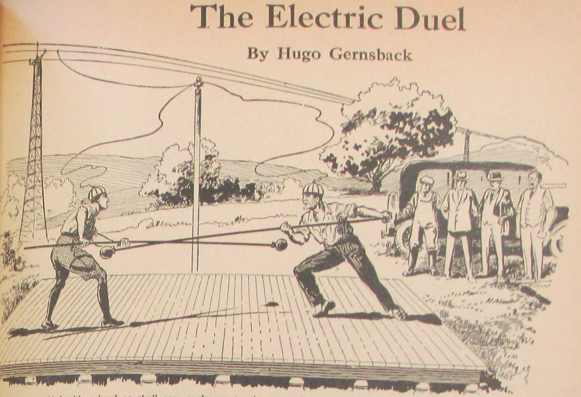

The Electric Duel
*Amazing Stories*, vol. 2 no. 6 , September 1927
DRAFT: Please do not share without permission of the author. Typeset versions in web | pdf | doc

A NEWS item from Milan, Italy, reports the strangest duel, probably, that ever was fought between two men. It was supposed to be a contest to the death—the first electric duel in history. The story has it that two young Italians employed in one of Milan’s great industrial electric works, became enamored of the Superintendent’s daughter and fought many fistic battles over the titian haired, comely young woman, reported to be one of the belles of Milan. She could not make up her mind whether she would be the future Mrs. Alessandro Fabiano or Mrs. Benedetto Luigi.
Finally the two suitors reached an agreement whereby they were to settle the issue with a fight to the death. This was immediately decided on after a terrific fistic encounter between the two young men.
Both being graduates of the University of Padua in Electrical Engineering, they chose electricity as a new form of duelling [sic]. The place of the encounter was chosen some thirty miles from the outskirts of Milan at a spot where a high tension line carrying over twenty thousand volts passed through the open country. One of the wires was connected as shown in the illustration so as to be grounded and another wire was attached to one of the feeders which came down to an insulator attached to a pole nearby. A wooden platform which had been used in building a bridge not far away was utilized as an insulating means. The two duelists had brought along from their factory large insulators upon which the platform rested. The wires were then led to the headmasks as shown in our illustration. Three witnesses, as well as a doctor, who had been sworn to secrecy, were also on hand to witness the strange spectacle that was to take place.
The idea was simple in itself. Each of the two was equipped with a pole and a buffer as shown in our illustration. The idea was that the one combatant was to push the other off the platform. The one remaining on the platform would be the winner. The unfortunate one who first touched the ground would naturally be electrocuted the instant his body came in contact with the earth.
The moment arrived when the two combatants at the shot of a pistol started the battle. The two rivals were wary of each other for the first fifteen minutes, and not much headway was made in the dangerous business. First Benedetto, then Alessandro was nearly pushed over the edge of the board only to recover by a supreme effort. At one time when Benedetto was almost on the brink of going over he grabbed hold of the pole of his antagonist and managed to pull himself forward to the other side again. After awhile the men began to fight hard and furious, till finally a most extraordinary thing happened, which neither of them had foreseen. They were rushing at each other, savagely, diagonally across the platform and both caught each other squarely in the stomach at the same instant. The impact was so terrific and so violent that both keeled over the side, one landing on the ground on one side and the other the opposite side, practically at the same instant. There was a bright flash, and the bodies of the poor unfortunates became enveloped in a dense cloud of smoke and were burned by the lightning-like discharge of the tremendous voltage.
The frightfulness of the situation was so great that I myself woke up and promised myself never again to eat a Welsh rarebit before going to bed.1
-
A reference to Winsor McCay’s comic strip Dreams of the Rarebit Fiend (1904-1925). In each installment, a character eats Welsh rarebit before bed—a dish of melted, seasoned cheese poured over bread—and has a surreal dream. Edwin S. Porter made a live action film version of the strip in 1906 titled Dreams of a Rarebit Fiend. ↩
Grant Wythoff, editor
grant.wythoff@gmail.com

This work is licensed under a Creative Commons Attribution-NonCommercial-NoDerivatives 4.0 International License.